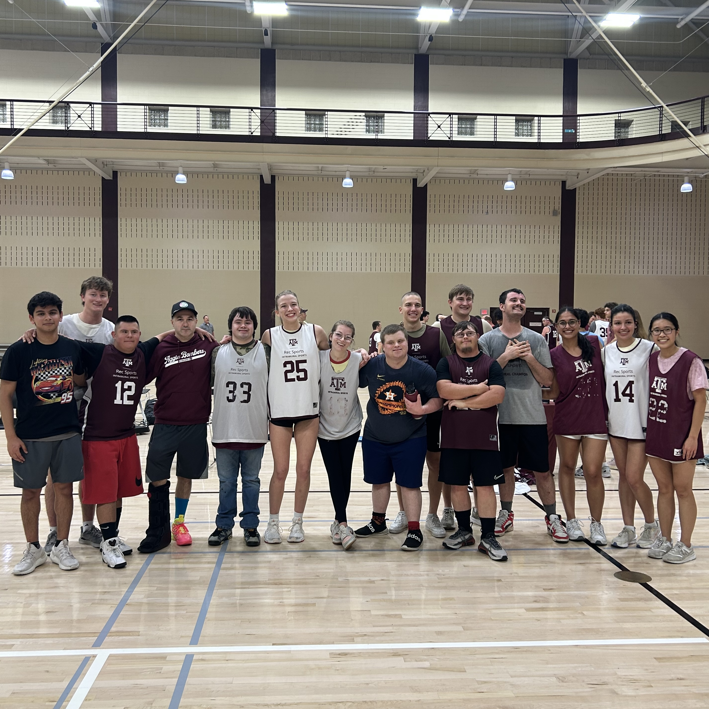
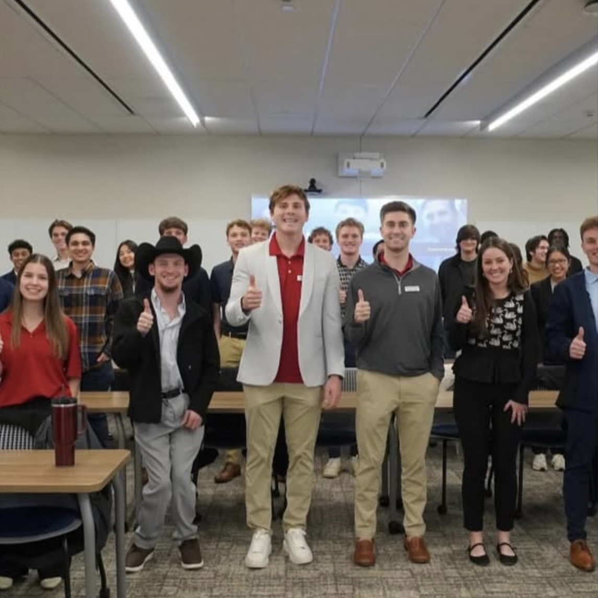
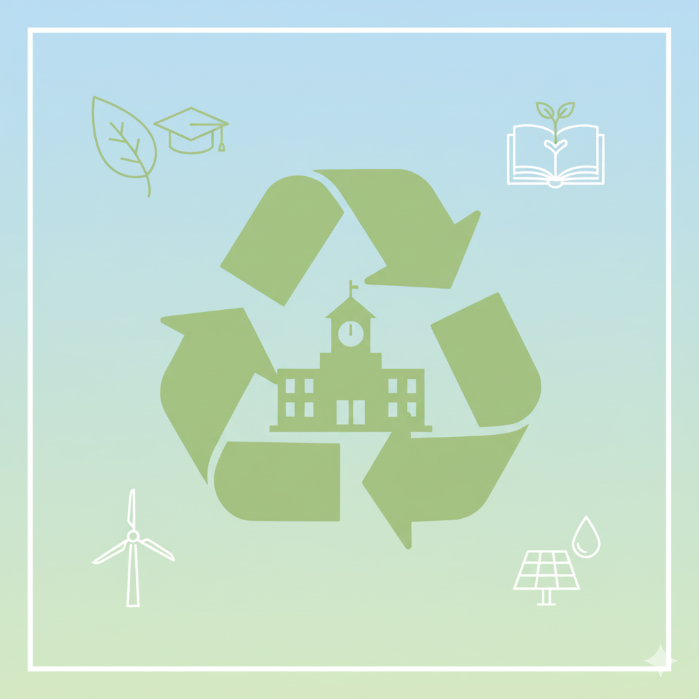

<!DOCTYPE html>
<html lang="en">
<head>
  <meta charset="UTF-8" />
  <meta name="viewport" content="width=device-width, initial-scale=1.0" />
  <title>Erica Le | E-Portfolio</title>

  <style>
    /* ===== Global Styles ===== */
    body {
      margin: 0;
      font-family: "Segoe UI", Roboto, Helvetica, Arial, sans-serif;
      background: linear-gradient(135deg, #fffaf2, #fffbe8, #ffeef0);
      color: #000000; /* Black text */
    }

    /* ===== Navigation Bar ===== */
    header {
      background-color: #ffffff; /* White bar */
      color: #000000; /* Black text */
      padding: 1rem 2rem;
      display: flex;
      align-items: center;
      justify-content: space-between;
      position: sticky;
      top: 0;
      z-index: 1000;
      box-shadow: 0 2px 6px rgba(0, 0, 0, 0.1);
    }

    header h1 {
      font-size: 1.25rem;
      letter-spacing: 0.5px;
      margin: 0;
      color: #000000; /* Ensures name is black in navbar */
    }
    
    nav a {
      color: #000000; /* Black text links */
      text-decoration: none;
      margin-left: 1.5rem;
      font-weight: 500;
      transition: color 0.2s ease, border-bottom 0.2s ease;
      padding-bottom: 2px;
    }

    nav a:hover {
      color: #800000; /* Maroon hover effect */
      border-bottom: 2px solid #800000;
    }

    /* ===== Split container ===== */
    .split-container {
      display: flex;
      flex-wrap: wrap;       /* allows stacking on smaller screens */
      max-width: 90%;        /* container fills 90% of the screen */
      margin: 2rem auto;     /* center horizontally */
      gap: 2rem;             /* gap between left and right sides */
      padding: 0;            /* optional: remove extra padding */
    }
    
    .left-side, .right-side {
      flex: 1;               /* each column takes equal space */
      min-width: 300px;      /* prevents them from getting too narrow */
      padding: 2rem;
      border-radius: 12px;
      box-shadow: 0 2px 8px rgba(0,0,0,0.1);
    }

    /* ===== Hero Banner ===== */
    .hero {
      position: relative;
      background-image: url("/images/Banner2.png");
      background-size: cover;
      background-position: center;
      height: 300px;
      display: flex;
      align-items: center;
      justify-content: center;
      color: black;
      font-size: 3rem;
      font-weight: bold;
      text-align: center;
      overflow: hidden;
    }
    
    .hero::before {
      position: absolute;
      inset: 0;
      background: rgba(0, 0, 0, 0.3); /* Dark overlay to help text pop */
    }
    /* ===== Main Section ===== */
    main {
      max-width: 90%;   /* bigger content width */
      margin: 3rem auto;
      padding: 0 1rem;
    }
}

    main h1 {
      text-align: center;
      font-size: 2rem;
      margin-top: 0;
    }

    main p {
      font-size: 1.1rem;
      line-height: 1.6;
    }

    img {
      display: block;
      margin: 1rem auto;
    }
  </style>
</head>

<body>
  <!-- Navigation Bar -->
  <header>
    <h1>Erica Le</h1>
    <nav>
      <a href="index.html">Home Page</a>
      <a href="about.html">About Me</a>
      <a href="experience.html">Experience &amp; Learning</a>
      <a href="future.html">Future Plans</a>
    </nav>
  </header>

  <!-- Hero Banner -->
  <section class="hero">
    <h1>Experience & Learning</h1>
  </section>

  <!-- Main Content -->
  <main>

    <div class="split-container">
    <div class="left-side">
      <h2>Coursework</h2>
      <p>
        <b>First Year</b> <br>
        <u>Fall 2024:</u> <br>
        BUSN 101: Freshman Business Initiative <br>
        ISTM 210: Fundamentals of Information Systems  <br>
        ECON 202: Principles of Economics  <br>
        POLS 207: State and Local Government  <br>
        SPAN 101: Beginning Spanish I <br>
        UGST 181: Beginning Spanish IFirst Year Seminar  <br><br>
  
        <u>Spring 2025:</u> <br>
        SPAN 102: Beginning Spanish II <br>
        ISTM 250: Programming Logic and Design  <br>
        ENDS 101: Honors-Design Process  <br>
        ECON 203: Principles of Economics  <br>
        ACCT 229: Introductory Accounting  <br><br>
  
        <b>Second Year</b> <br>
        <u>Fall 2025:</u> <br>
        ISTM 310: Network Communication & Infrastructure  <br>
        ISTM 320: Business Systems Analysis & Design  <br>
        ACCT 230: Honors-Intro Accounting  <br>
        FINC 341: Business Finance  <br>
        BUSN 203: Statistical Methods for Business  <br>
        ISTM 281: Professional Development Information Systems Seminar  <br>

      <u>Spring 2026:</u> <br>
        MGMT 363: Honors-Managing People In Organizations <br>
        ISTM 315: Database Programming <br>
        ISTM 410: Management Information Systems <br>
        SCMT 364: Operations Management <br>
        ISTM 380: Human Computer Interaction <br>
        ISTM 481: Information Systems Seminar <br>
    </p>
    </div>
  
    <div class="right-side">
      <h2>Extracurriculars</h2>
      <p>
        <b>First Year</b> <br>
        <u>Fall 2024:</u> <br>
        Aggie Special Olympics Texas Volunteers <br><br>
  
        <u>Spring 2024:</u> <br>
        Aggie Special Olympics Texas Volunteers <br>
        Association of Information Technology Professionals <br><br>
  
        <b>Second Year</b> <br>
        <u>Fall 2025:</u> <br>
        Association of Information Technology Professionals <br>
        Aggie Innovators <br>
        Aggie Eco-Reps <br><br>
      </p>
  
      <h2>University Honors Program</h2>
      <p>
  This program has provided me with many opportunities to network and speak with professionals and faculty members. By attending panel discussions and speaker presentations, I have received valuable insight and advice on how to be successful during my time here at A&M. In the First Year Seminar course, we are assigned weekly writing assignments in which I develop my ability to reflect on my values and goals. Living in the University Honors Housing Community has been a wonderful experience as I am surrounded with like-minded individuals who encourage me to continuously reach my fullest potential.
      </p>
    </div>
</div>

<div class="ASOTV-section">
  
  <div class="ASOTV-text">
  <h2>Aggie Special Olympics Texas Volunteers</h2>
    <p>
I am grateful for the opportunity to support A&M’s special education athletes, whether it be on the field or court. I enjoy guiding them through games, such as flag football and basketball, and encouraging them to give their best effort. Through the victories and the losses, I have learned valuable lessons of teamwork and persistence from my peers.
    </p>
  </div>
</div>

<head>
  <style>
    .ASOTV-section {
      display: flex;
      gap: 2rem;
      max-width: 90%;
      margin: 2rem auto;
      align-items: flex-start;
    }

    .ASOTV-photo {
      width: 200px;
      height: auto;
    }

    .ASOTV-text {
      flex: 1;
    }
  </style>
</head>

    <div class="AITP-section">
  
  <div class="AITP-text">
  <h2>Association of IT Professionals</h2>
    <p>
Being part of AITP has given me the opportunity to attend guest speaker events and network across a variety of industries, from energy to consulting. Through these experiences, I have gained greater exposure to the real world and feel better prepared for life after graduation. I have been able to build relationships with classmates who share the same passions and aspirations as I do. Since this organization includes students from all year levels, I have received advice and guidance from upperclassmen and am very grateful to have them as a mentor-like figure. 
    </p>
  </div>
</div>

    <head>
  <style>
    .AITP-section {
      display: flex;
      gap: 2rem;
      max-width: 90%;
      margin: 2rem auto;
      align-items: flex-start;
    }

    .AITP-photo {
      width: 200px;
      height: auto;
    }

    .AITP-text {
      flex: 1;
    }
  </style>
</head>

    <div class="ECO-section">
  
  <div class="ECO-text">
  <h2>Aggie Eco-Reps</h2>
    <p>
I recently joined Aggie Eco-Reps so that I could help make Texas A&M a more sustainable campus. I have participated in campus cleanups and friendly competitions to see which groups could collect the most trash. As a member of the fundraising committee, I helped bake goods for bake sales and designed posters for succulent sales. These volunteer experiences have strengthened my collaboration skills and taught me ways to make eco-friendly choices in my daily life.
    </p>
  </div>
</div>

    <head>
  <style>
    .ECO-section {
      display: flex;
      gap: 2rem;
      max-width: 90%;
      margin: 2rem auto;
      align-items: flex-start;
    }

    .ECO-photo {
      width: 200px;
      height: auto;
    }

    .ECO-text {
      flex: 1;
    }
  </style>
</head>
    
  </main>
</body>
</html>
